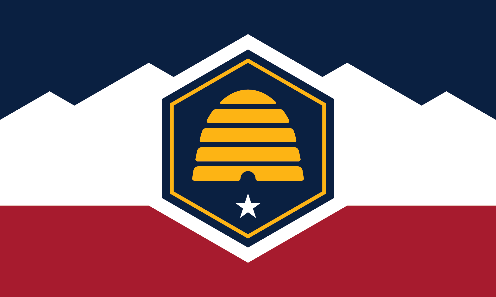

About Me
Welcome to my WDD 131 page. I am a student at BYUI. I am currently working on my Web Design and Development Certificate. I enjoy learning about web design and development. I am excited to learn more about creating websites and web applications.
Saratoga Springs, Utah

Official Flag of Utah
I am a native of Utah. I was born in Brigham City, Utah. I grew up in Mantua, Utah. I have lived in Saratoga Springs, Utah for the last 18 years. I love the mountains and the outdoors. I enjoy mountain biking, computers, and fishing.